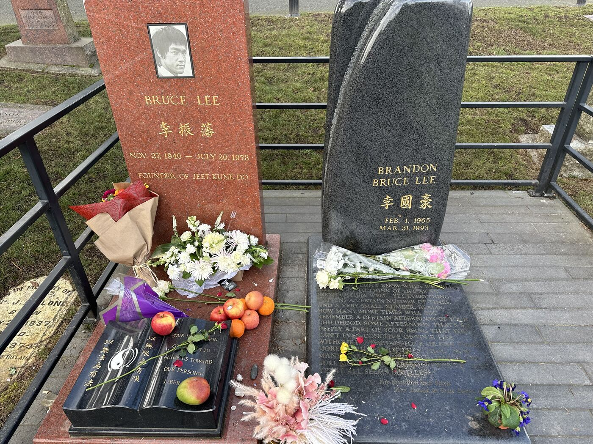

A global icon, his only son, and the founders of Seattle all rest on one quiet Capitol Hill ridge. Most people only ever find two of the graves.

Climb the rise on the eastern edge of Capitol Hill and you are walking among the people who built Seattle. Lake View Cemetery sits above the rooftops, its paths winding through Douglas firs and cedars that have stood here since the 1870s. It is the oldest active cemetery in the city. It is also, quietly, one of the best history walks in the Pacific Northwest.
Most people come for one reason. Two headstones of polished granite stand a few feet apart beneath the trees, near the eastern edge of the grounds. They belong to Bruce Lee and his son, Brandon.
We remember Bruce Lee as a Hong Kong legend and a Hollywood phenomenon, and he was both. But the years that shaped him happened here.
He arrived in Seattle in 1959, eighteen years old, carrying little more than family connections and a restlessness that would not sit still. His father, the Cantonese opera star Lee Hoi-chuen, had sent him from Hong Kong in part to put distance between the boy and the street trouble he had found as a teenager. Seattle had a small but established Chinese American community, and that made it a reasonable place to land.
What no one could have predicted was how deeply the city would form him. Lee earned his high school diploma at Edison Technical School and worked as a live-in waiter at Ruby Chow's restaurant on Broadway. He read constantly, hauling armloads of books home from the Seattle Public Library and filling notebooks with ideas about movement, energy, and what a body and mind could become. In 1961 he enrolled at the University of Washington, where philosophy became a lasting obsession. His notebooks from those years mix passages from Descartes and Krishnamurti with diagrams of striking techniques.
While he was still a student, Lee opened his first formal martial arts school. He called it the Jun Fan Gung Fu Institute, after his Chinese given name, and ran it out of small spaces in the University District and on Capitol Hill.
One decision from those years still stands out. Lee taught anyone who showed up willing to work, regardless of race. In 1960s Seattle, where martial arts schools were largely segregated by custom and Chinese instructors usually taught only Chinese students, that choice made him both admired and controversial. It also planted the seed of what the world would later know as Jeet Kune Do.
He met Linda Emery at the University of Washington, where she had become one of his students. They married in 1964. The family eventually moved south, and Bruce went on to remake martial arts and film around the world before his sudden death in Hong Kong on July 20, 1973. He was 32. Linda brought him home to Seattle, and he was buried here beneath a stone engraved with his name in English and Chinese.
Twenty years later the family returned to this hill under circumstances almost too cruel to write down.
Brandon Lee had grown up partly inside his father's enormous shadow and partly, as he came into his own, in his own light. He had built a serious acting career that was finally standing on its own terms when a prop gun accident on the set of The Crow ended his life in March 1993. He was 28, four years younger than his father had been.
He was buried beside Bruce. His headstone carries a line from Paul Bowles's novel The Sheltering Sky: "Because we don't know when we will die, we get to think of life as an inexhaustible well." Brandon had chosen that passage to read at his wedding to his fiancee, Eliza Hutton. The wedding was only weeks away when he died. Knowing that, the words on the stone are hard to read without stopping.
Here is where Lake View becomes genuinely off the beaten path.
The Lees draw the crowds, but they are far from the only reason to walk this hill. Lake View is sometimes called Seattle's pioneer cemetery, and the founders of the city rest all around you. The Dennys, the Mercers, the Maynards, the Yeslers, names you have read on street signs your whole life, were laid into this ground.
Near them lies Princess Angeline, Kikisoblu, the eldest daughter of Chief Seattle, the man the city is named for. She spent her last years in a small waterfront cabin downtown, long after her people had been pushed off their land, and she is buried here among the settlers whose arrival changed everything she knew. Stand between her grave and the pioneer plots and you get the whole arc of Seattle's story, Indigenous and pioneer and immigrant and global, in the space of a short walk.
That is the quiet surprise of Lake View. You come for an icon and you leave having met the city.
Lake View Cemetery is at 1554 15th Ave E, on Capitol Hill, just north of Volunteer Park. It is free, open to the public, and an easy walk from the park and the neighborhood's cafes.
A few things worth keeping in mind:
A cemetery is an odd place to feel the pulse of a city, but Lake View earns it. The same ground holds the daughter of the man Seattle is named for, the families who platted its first streets, and a young man from Hong Kong who studied philosophy at the UW, taught in a small studio on Capitol Hill, and changed how the world thinks about what a human body can do.
People travel from Japan, Brazil, and Germany to stand quietly at two matched stones beneath the cedars. They leave a flower, take a breath, and walk back down the hill into the city that Bruce Lee once called home. You can do the same any day of the week, and almost no one will be there to tell you it is special. That is rather the point.
Want directions, or more of the Northwest's hidden corners to explore near this one?
Explore the Pacific Northwest Historical Explorer map
Another quiet corner of the Northwest, off the beaten path.